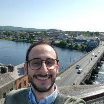

Academic Collaborators
The MASAIC project collaborates with leading researchers from institutions around the world.

Trung Dung Ngo
Professor

University of Prince Edward Island
Research Areas:
Multi-Robot Systems, Modular Robotics, Human-Robot Cooperation, Industrial Automation
Visit Profile →
Multi-Robot Systems, Modular Robotics, Human-Robot Cooperation, Industrial Automation

Salvatore D'Avella
Assistant Professor
Sant'Anna School of Advanced Studies
Research Areas:
Computer Vision, Machine Learning, Industry 4.0, Robotic Grasping and Manipulation
Visit Profile →
Computer Vision, Machine Learning, Industry 4.0, Robotic Grasping and Manipulation
Fulvio Mastrogiovanni
Associate Professor
University of Genoa
Research Areas:
Human-Robot Interaction, Cognitive Robotics
Visit Profile →
Human-Robot Interaction, Cognitive Robotics
Shan Luo
Professor
King's College London
Research Areas:
Tactile Sensing, Robotic Manipulation
Visit Profile →
Tactile Sensing, Robotic Manipulation

She Yu
Assistant Professor
Purdue University
Research Areas:
Machine Learning, Intelligent Systems
Visit Profile →
Machine Learning, Intelligent Systems